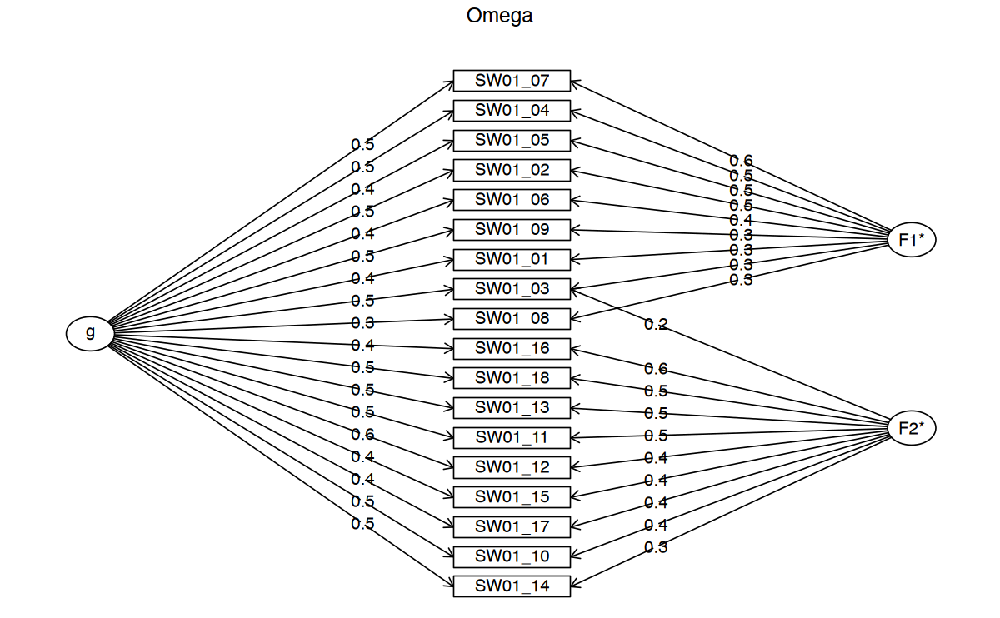
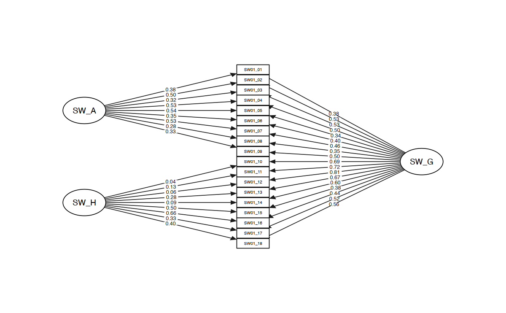

here::here("code", "_common.R") |> source()
# Load packages
if (!requireNamespace("pacman")) install.packages("pacman")
pacman::p_load(
lavaan, psych, semTools, BifactorIndicesCalculator, semPlot, stringr, paran,
lsr, car, pROC, graphics, qgraph, effectsize, reportROC, GPArotation
)47 ✏️ Esercizi
47.1 Introduzione
In questo esercizio replicheremo la validazione della Strengths and Weaknesses of ADHD Symptoms and Normal Behavior Scale descritta nell’articolo di Blume et al. (2020).
Gli adulti con sintomi di disturbo da deficit di attenzione/iperattività (ADHD; American Psychiatric Association [APA], 2013) presentano sintomi di disattenzione (ad esempio, difficoltà a mantenere l’attenzione sul lavoro, durante compiti o attività), iperattività-impulsività (ad esempio, interrompere o intromettersi nelle conversazioni, parlare in modo eccessivo), o una combinazione di entrambi. Questi sintomi sono associati a compromissioni nel funzionamento accademico (ad esempio, tassi più bassi di diploma e laurea), lavorativo (ad esempio, redditi complessivamente inferiori) e sociale (ad esempio, meno amici, tassi di divorzio più alti).
L’ADHD si manifesta inizialmente durante l’infanzia e persiste nell’età adulta in circa la metà dei casi, con una prevalenza stimata del 2.5% negli adulti. Clinicamente, l’ADHD si presenta in tre modalità principali:
- Presentazione prevalentemente disattenta: predominano i sintomi di disattenzione;
- Presentazione prevalentemente iperattiva-impulsiva: predominano i sintomi di iperattività-impulsività;
- Presentazione combinata: sono presenti livelli significativi di entrambi i tipi di sintomi.
Swanson e colleghi (2012) hanno introdotto la scala Strengths and Weaknesses of ADHD-Symptoms and Normal-Behavior (SWAN), che valuta i sintomi di disattenzione e iperattività-impulsività nei bambini in età scolare tramite un report di terze parti. La scala, composta da 18 item, si basa sui criteri sintomatici definiti nel Diagnostic and Statistical Manual of Mental Disorders (DSM-IV; APA, 2000) e confermati nel DSM-5 (APA, 2013). La SWAN è stata progettata per valutare il comportamento dei bambini, concentrandosi su situazioni scolastiche, di gioco e domestiche. La scala utilizza un punteggio a 7 punti, con ancore che rappresentano gli estremi negativi (“molto al di sotto della media”) e positivi (“molto al di sopra della media”), confrontando il comportamento del bambino con quello di altri coetanei. La SWAN è stata la prima scala a valutare i sintomi dell’ADHD in modo realmente dimensionale.
Blume et al. (2020) adattano la versione tedesca esistente, SWAN-DE (Schulz-Zhecheva et al., 2019), in una versione self-report per adulti, denominandola German Strengths and Weaknesses of ADHD and Normal-Behavior Scale Self-Report (SWAN-DE-SB).
47.2 Validazione
Di seguito è fornita una parte dello script R fornito dagli autori per l’analisi statistica dai dati grezzi fino alla formulazione del modello bifattoriale.
data <- rio::import(here::here("data", "blume_2024", "data_total_OSF.csv"))
data$X <- NULL # delete column without information
data$SW_mean <- as.numeric(data$SW_mean) # convert from character to numeric
data$SW_AD_mean <- as.numeric(data$SW_AD_mean)
data$SW_HI_mean <- as.numeric(data$SW_HI_mean)
data$CA_mean <- as.numeric(data$CA_mean)
data$CA_AD_mean <- as.numeric(data$CA_AD_mean)
data$CA_HI_mean <- as.numeric(data$CA_HI_mean)
data$HA_mean <- as.numeric(data$HA_mean)
data$HA_AD_mean <- as.numeric(data$HA_AD_mean)
data$HA_HI_mean <- as.numeric(data$HA_HI_mean)data_clin <- rio::import(here::here("data", "blume_2024", "data_clinical_OSF.csv"))
data_clin$X <- NULL # delete column without information
data_clin$SW_mean <- as.numeric(data_clin$SW_mean) # convert from character to numeric
data_clin$SW_AD_mean <- as.numeric(data_clin$SW_AD_mean)
data_clin$SW_HI_mean <- as.numeric(data_clin$SW_HI_mean)
data_clin$CA_mean <- as.numeric(data_clin$CA_mean)
data_clin$CA_AD_mean <- as.numeric(data_clin$CA_AD_mean)
data_clin$CA_HI_mean <- as.numeric(data_clin$CA_HI_mean)
data_clin$HA_mean <- as.numeric(data_clin$HA_mean)
data_clin$HA_AD_mean <- as.numeric(data_clin$HA_AD_mean)
data_clin$HA_HI_mean <- as.numeric(data_clin$HA_HI_mean)# Information on missing data in the general population sample
SWAN_vars <- colnames(data)[str_detect(colnames(data), "SW01")]
sum(is.na(data[, SWAN_vars])) # 1 data point missing
sum(!is.na(data[, SWAN_vars])) # 7163 not missing -> 0.01% missing
1
7163
# age
sem_age1 <- "
SW_GF =~ SW01_01 + SW01_02 + SW01_03 + SW01_04 + SW01_05 + SW01_06
+ SW01_07 + SW01_08 + SW01_09 + SW01_10 + SW01_11 + SW01_12
+ SW01_13 + SW01_14 + SW01_15 + SW01_16 + SW01_17 + SW01_18;
SW_GF ~ age
"
fit_age1 <- sem(sem_age1, data = data)
# Regressions:
# Estimate Std.Err z-value P(>|z|)
# SW_GF ~
# age 0.001 0.003 0.285 0.775
sem_age2 <- "
SW_AD =~ SW01_01 + SW01_02 + SW01_03 + SW01_04 + SW01_05 + SW01_06
+ SW01_07 + SW01_08 + SW01_09;
SW_AD ~ age
"
fit_age2 <- sem(sem_age2, data = data)
# Regressions:
# Estimate Std.Err z-value P(>|z|)
# SW_AD ~
# age 0.004 0.003 1.018 0.309
sem_age3 <- "
SW_HI =~ SW01_10 + SW01_11 + SW01_12 + SW01_13 + SW01_14 + SW01_15
+ SW01_16 + SW01_17 + SW01_18;
SW_HI ~ age
"
fit_age3 <- sem(sem_age3, data = data)
# Regressions:
# Estimate Std.Err z-value P(>|z|)
# SW_HI ~
# age -0.002 0.005 -0.530 0.596glimpse(data)Rows: 398
Columns: 84
$ V1 <int> 1, 2, 3, 4, 5, 6, 7, 8, 9, 10, 11, 12, 13, 14, 15, ~
$ id <int> 1, 2, 4, 5, 6, 7, 8, 9, 10, 11, 12, 13, 14, 15, 16,~
$ gender <int> NA, NA, NA, NA, NA, NA, NA, NA, NA, NA, NA, NA, NA,~
$ age <int> 36, 26, 21, 21, 21, 19, 22, 25, 28, 20, 19, 32, 18,~
$ diagnosis_ever <int> 2, 2, 2, 2, 2, 2, 2, 2, 2, 2, 2, 2, 2, 2, 2, 2, 2, ~
$ diagnosis_now <int> 2, 2, 2, 2, 2, 2, 2, 2, 2, 2, 2, 2, 2, 2, 2, 2, 2, ~
$ medication <int> 2, 2, 2, 2, 2, 2, 2, 2, 2, 2, 2, 2, 2, 2, 2, 2, 2, ~
$ education <int> 4, 3, 3, 3, 3, 3, 3, 4, 4, 3, 3, 4, 3, 3, 3, 4, 3, ~
$ SW01_01 <int> 2, 4, 4, 4, 4, 6, 4, 6, 3, 4, 5, 6, 4, 4, 3, 5, 4, ~
$ SW01_02 <int> 2, 6, 3, 3, 5, 5, 4, 4, 4, 1, 5, 5, 3, 4, 3, 5, 1, ~
$ SW01_03 <int> 4, 6, 5, 3, 4, 6, 6, 6, 5, 4, 5, 5, 5, 6, 2, 5, 4, ~
$ SW01_04 <int> 4, 6, 3, 4, 5, 6, 5, 5, 5, 3, 6, 5, 4, 5, 3, 5, 1, ~
$ SW01_05 <int> 3, 3, 5, 4, 5, 6, 6, 6, 6, 5, 4, 6, 5, 5, 6, 5, 2, ~
$ SW01_06 <int> 4, 3, 3, 3, 5, 6, 6, 5, 3, 1, 6, 5, 5, 5, 2, 5, 2, ~
$ SW01_07 <int> 4, 4, 3, 3, 5, 6, 6, 6, 6, 3, 3, 5, 4, 5, 5, 5, 4, ~
$ SW01_08 <int> 3, 3, 2, 3, 3, 4, 3, 5, 5, 1, 3, 4, 3, 2, 1, 2, 3, ~
$ SW01_09 <int> 3, 4, 3, 4, 5, 4, 0, 6, 6, 5, 1, 5, 3, 6, 4, 4, 4, ~
$ SW01_10 <int> 3, 5, 2, 3, 4, 3, 6, 3, 4, 5, 3, 5, 3, 4, 3, 3, 2, ~
$ SW01_11 <int> 3, 6, 3, 3, 4, 5, 6, 6, 4, 6, 5, 5, 3, 6, 3, 3, 5, ~
$ SW01_12 <int> 3, 3, 3, 3, 3, 6, 6, 6, 3, 6, 4, 5, 2, 3, 3, 3, 2, ~
$ SW01_13 <int> 4, 6, 3, 3, 3, 6, 2, 6, 5, 2, 5, 6, 3, 5, 4, 3, 1, ~
$ SW01_14 <int> 3, 1, 3, 3, 3, 6, 6, 6, 5, 6, 5, 4, 4, 5, 1, 2, 5, ~
$ SW01_15 <int> 3, 4, 3, 3, 5, 6, 3, 6, 4, 4, 5, 5, 3, 4, 5, 2, 2, ~
$ SW01_16 <int> 2, 6, 3, 3, 5, 5, 2, 6, 3, 6, 5, 5, 3, 4, 3, 2, 2, ~
$ SW01_17 <int> 3, 4, 4, 3, 3, 5, 3, 6, 3, 6, 5, 5, 3, 4, 1, 1, 4, ~
$ SW01_18 <int> 3, 4, 3, 3, 3, 6, 3, 6, 4, 2, 5, 5, 3, 1, 3, 2, 0, ~
$ HA01_01 <int> 1, 1, 0, 1, 1, 0, 0, 0, 1, 1, 1, 1, 1, 0, 1, 0, 2, ~
$ HA01_02 <int> 2, 1, 0, 1, 0, 0, 1, 0, 0, 2, 0, 2, 1, 0, 0, 0, 2, ~
$ HA01_03 <int> 1, 1, 0, 0, 1, 0, 1, 0, 0, 1, 0, 2, 0, 1, 1, 0, 1, ~
$ HA01_04 <int> 0, 0, 0, 0, 0, 0, 0, 0, 0, 1, 0, 1, 1, 0, 0, 0, 0, ~
$ HA01_05 <int> 1, 1, 0, 0, 0, 0, 0, 0, 0, 1, 0, 1, 0, 0, 0, 0, 1, ~
$ HA01_06 <int> 0, 1, 0, 0, 0, 0, 0, 0, 0, 0, 1, 0, 0, 0, 0, 0, 0, ~
$ HA01_07 <int> 1, 0, 0, 1, 0, 0, 0, 0, 1, 0, 0, 0, 1, 2, 0, 0, 0, ~
$ HA01_08 <int> 1, 0, 1, 1, 0, 0, 1, 1, 0, 2, 1, 1, 1, 1, 2, 1, 2, ~
$ HA01_09 <int> 0, 1, 0, 0, 0, 0, 0, 0, 0, 1, 1, 0, 1, 0, 0, 0, 0, ~
$ HA01_10 <int> 0, 0, 1, 0, 0, 1, 0, 0, 0, 0, 0, 0, 1, 0, 1, 0, 1, ~
$ HA01_11 <int> 0, 0, 0, 0, 0, 0, 0, 0, 0, 0, 0, 0, 0, 0, 0, 0, 0, ~
$ HA01_12 <int> 1, 3, 0, 1, 0, 0, 0, 0, 1, 0, 1, 1, 0, 0, 2, 0, 1, ~
$ HA01_13 <int> 0, 0, 1, 0, 0, 0, 0, 0, 0, 0, 0, 0, 0, 0, 0, 0, 0, ~
$ HA01_14 <int> 1, 2, 0, 0, 0, 0, 2, 1, 0, 0, 0, 0, 0, 1, 1, 2, 0, ~
$ HA01_15 <int> 1, 1, 0, 1, 0, 1, 1, 0, 1, 1, 0, 1, 1, 1, 1, 2, 2, ~
$ HA01_16 <int> 0, 1, 0, 1, 0, 0, 1, 0, 1, 1, 0, 0, 0, 1, 0, 0, 0, ~
$ HA01_17 <int> 0, 0, 0, 0, 0, 0, 1, 0, 0, 0, 0, 0, 1, 0, 0, 1, 1, ~
$ HA01_18 <int> 0, 0, 0, 0, 1, 1, 1, 0, 0, 1, 0, 0, 0, 0, 0, 1, 0, ~
$ HA01_19 <int> 0, 1, 0, 0, 0, 0, 1, 0, 0, 2, 0, 0, 1, 0, 1, 3, 2, ~
$ HA01_20 <int> 0, 1, 0, 1, 0, 0, 0, 0, 0, 1, 0, 0, 1, 1, 0, 1, 1, ~
$ HA01_21 <int> 1, 3, 0, 0, 0, 0, 1, 0, 0, 1, 0, 2, 0, 0, 0, 1, 1, ~
$ HA01_22 <int> 0, 2, 0, 0, 0, 0, 2, 0, 0, 0, 0, 0, 0, 0, 0, 1, 1, ~
$ CA01_01 <int> 1, 0, 1, 1, 1, 1, 1, 0, 2, 1, 1, 1, 1, 1, 2, 2, 2, ~
$ CA01_02 <int> 1, 2, 1, 0, 0, 1, 2, 1, 3, 0, 0, 1, 0, 0, 1, 3, 0, ~
$ CA01_03 <int> 1, 1, 0, 1, 1, 0, 0, 0, 0, 1, 1, 1, 0, 1, 1, 0, 2, ~
$ CA01_04 <int> 1, 0, 0, 0, 2, 1, 0, 0, 0, 2, 0, 1, 0, 0, 0, 0, 0, ~
$ CA01_05 <int> 0, 1, 0, 0, 0, 0, 0, 0, 0, 1, 1, 0, 1, 0, 0, 0, 1, ~
$ CA01_06 <int> 2, 2, 2, 1, 2, 1, 0, 1, 1, 3, 2, 0, 1, 2, 0, 3, 0, ~
$ CA01_07 <int> 2, 3, 2, 1, 1, 1, 1, 0, 1, 2, 1, 0, 0, 1, 1, 1, 0, ~
$ CA01_08 <int> 1, 1, 0, 0, 0, 0, 0, 0, 1, 0, 0, 0, 0, 0, 0, 1, 0, ~
$ CA01_09 <int> 0, 1, 2, 0, 0, 2, 0, 0, 0, 2, 1, 0, 1, 2, 1, 0, 1, ~
$ CA01_10 <int> 1, 0, 1, 1, 1, 1, 2, 0, 1, 1, 0, 2, 1, 1, 1, 3, 0, ~
$ CA01_11 <int> 1, 2, 2, 0, 0, 0, 0, 0, 1, 1, 0, 1, 0, 0, 1, 0, 0, ~
$ CA01_12 <int> 2, 1, 3, 1, 0, 0, 1, 1, 0, 3, 1, 2, 0, 1, 2, 0, 1, ~
$ CA01_13 <int> 2, 2, 2, 0, 0, 0, 0, 0, 0, 1, 0, 2, 0, 1, 1, 0, 0, ~
$ CA01_14 <int> 1, 1, 0, 0, 1, 0, 2, 0, 0, 2, 1, 2, 0, 0, 1, 1, 2, ~
$ CA01_15 <int> 2, 3, 2, 2, 2, 1, 2, 0, 1, 1, 1, 2, 0, 1, 2, 3, 1, ~
$ CA01_16 <int> 2, 3, 2, 1, 1, 1, 0, 1, 1, 1, 1, 1, 0, 1, 1, 1, 0, ~
$ CA01_17 <int> 2, 1, 2, 1, 2, 0, 0, 0, 0, 2, 0, 1, 0, 1, 1, 3, 3, ~
$ CA01_18 <int> 2, 2, 2, 1, 1, 0, 0, 1, 1, 3, 0, 2, 1, 0, 1, 2, 3, ~
$ CA01_19 <int> 0, 0, 2, 0, 1, 0, 1, 0, 1, 0, 2, 1, 0, 1, 0, 1, 1, ~
$ CA01_20 <int> 1, 1, 1, 1, 0, 1, 0, 0, 0, 0, 2, 1, 0, 1, 1, 0, 1, ~
$ CA01_21 <int> 0, 0, 0, 0, 1, 0, 1, 0, 0, 3, 1, 2, 0, 0, 0, 2, 1, ~
$ CA01_22 <int> 2, 1, 3, 0, 0, 0, 3, 0, 0, 1, 0, 2, 0, 0, 1, 0, 2, ~
$ CA01_23 <int> 1, 0, 2, 0, 0, 2, 0, 0, 0, 0, 0, 0, 0, 0, 0, 0, 1, ~
$ CA01_24 <int> 0, 0, 1, 0, 0, 0, 2, 1, 0, 3, 0, 1, 0, 0, 0, 0, 0, ~
$ CA01_25 <int> 1, 3, 3, 0, 1, 0, 0, 0, 1, 2, 0, 1, 0, 1, 3, 0, 3, ~
$ CA01_26 <int> 1, 3, 1, 0, 0, 1, 0, 0, 0, 0, 0, 0, 0, 1, 0, 0, 0, ~
$ diagnosis_type <int> NA, NA, NA, NA, NA, NA, NA, NA, NA, NA, NA, NA, NA,~
$ SW_mean <dbl> 3.11, 4.33, 3.22, 3.22, 4.11, 5.39, 4.28, 5.56, 4.3~
$ SW_AD_mean <dbl> 3.22, 4.33, 3.44, 3.44, 4.56, 5.44, 4.44, 5.44, 4.7~
$ SW_HI_mean <dbl> 3.00, 4.33, 3.00, 3.00, 3.67, 5.33, 4.11, 5.67, 3.8~
$ CA_mean <dbl> 1.154, 1.308, 1.423, 0.462, 0.692, 0.538, 0.692, 0.~
$ CA_AD_mean <dbl> 1.0, 1.0, 0.8, 0.6, 1.0, 0.0, 0.2, 0.2, 0.2, 2.0, 0~
$ CA_HI_mean <dbl> 1.3, 1.1, 1.3, 0.5, 0.7, 0.8, 0.4, 0.1, 0.7, 1.1, 0~
$ HA_mean <dbl> 0.5000, 0.9091, 0.1364, 0.3636, 0.1364, 0.1364, 0.5~
$ HA_AD_mean <dbl> 0.778, 0.667, 0.111, 0.444, 0.222, 0.000, 0.333, 0.~
$ HA_HI_mean <dbl> 0.333, 0.778, 0.222, 0.333, 0.111, 0.333, 0.667, 0.~# education
sem_education1 <- "
SW_GF =~ SW01_01 + SW01_02 + SW01_03 + SW01_04 + SW01_05 + SW01_06
+ SW01_07 + SW01_08 + SW01_09 + SW01_10 + SW01_11 + SW01_12
+ SW01_13 + SW01_14 + SW01_15 + SW01_16 + SW01_17 + SW01_18;
SW_GF ~ education
"
fit_education1 <- sem(sem_education1, data = data)
# Regressions:
# Estimate Std.Err z-value P(>|z|)
# SW_GF ~
# education 0.170 0.059 2.897 0.004
sem_education2 <- "
SW_AD =~ SW01_01 + SW01_02 + SW01_03 + SW01_04 + SW01_05 + SW01_06
+ SW01_07 + SW01_08 + SW01_09;
SW_AD ~ education
"
fit_education2 <- sem(sem_education2, data = data)
# Regressions:
# Estimate Std.Err z-value P(>|z|)
# SW_AD ~
# education 0.209 0.066 3.196 0.001
sem_education3 <- "
SW_HI =~ SW01_10 + SW01_11 + SW01_12 + SW01_13 + SW01_14 + SW01_15
+ SW01_16 + SW01_17 + SW01_18;
SW_HI ~ education
"
fit_education3 <- sem(sem_education3, data = data)
# Regressions:
# Estimate Std.Err z-value P(>|z|)
# SW_HI ~
# education 0.172 0.086 2.016 0.044
# interactionsSWAN_vars <- colnames(data)[str_detect(colnames(data), "SW01")]
SW_AD <- colnames(data[, c(
"SW01_01",
"SW01_02",
"SW01_03",
"SW01_04",
"SW01_05",
"SW01_06",
"SW01_07",
"SW01_08",
"SW01_09"
)])
SW_HI <- colnames(data[, c(
"SW01_10",
"SW01_11",
"SW01_12",
"SW01_13",
"SW01_14",
"SW01_15",
"SW01_16",
"SW01_17",
"SW01_18"
)])
# Cronbachs alphas
psych::alpha(data[, SWAN_vars]) # 0.90
psych::alpha(data[, SW_AD]) # 0.85
psych::alpha(data[, SW_HI]) # 0.87
Reliability analysis
Call: psych::alpha(x = data[, SWAN_vars])
raw_alpha std.alpha G6(smc) average_r S/N ase mean sd median_r
0.9 0.9 0.92 0.33 8.8 0.0075 3.8 0.83 0.33
95% confidence boundaries
lower alpha upper
Feldt 0.88 0.9 0.91
Duhachek 0.88 0.9 0.91
Reliability if an item is dropped:
raw_alpha std.alpha G6(smc) average_r S/N alpha se var.r med.r
SW01_01 0.89 0.90 0.91 0.33 8.5 0.0078 0.014 0.34
SW01_02 0.89 0.89 0.91 0.32 8.1 0.0081 0.013 0.32
SW01_03 0.89 0.89 0.91 0.33 8.3 0.0080 0.014 0.32
SW01_04 0.89 0.89 0.91 0.33 8.3 0.0080 0.013 0.33
SW01_05 0.89 0.90 0.91 0.34 8.6 0.0077 0.012 0.33
SW01_06 0.89 0.89 0.91 0.33 8.5 0.0078 0.014 0.33
SW01_07 0.89 0.89 0.91 0.33 8.3 0.0080 0.013 0.33
SW01_08 0.90 0.90 0.91 0.34 8.7 0.0077 0.013 0.34
SW01_09 0.89 0.89 0.91 0.33 8.3 0.0080 0.014 0.32
SW01_10 0.89 0.89 0.91 0.32 8.2 0.0081 0.014 0.32
SW01_11 0.89 0.89 0.91 0.32 8.2 0.0081 0.013 0.32
SW01_12 0.89 0.89 0.91 0.32 8.0 0.0082 0.012 0.32
SW01_13 0.89 0.89 0.91 0.32 8.2 0.0081 0.013 0.32
SW01_14 0.89 0.89 0.91 0.33 8.3 0.0080 0.014 0.33
SW01_15 0.90 0.90 0.91 0.34 8.7 0.0077 0.012 0.33
SW01_16 0.89 0.90 0.91 0.34 8.6 0.0077 0.011 0.33
SW01_17 0.89 0.89 0.91 0.33 8.4 0.0079 0.013 0.33
SW01_18 0.89 0.89 0.91 0.33 8.3 0.0080 0.013 0.33
Item statistics
n raw.r std.r r.cor r.drop mean sd
SW01_01 398 0.54 0.54 0.51 0.48 3.9 1.3
SW01_02 397 0.68 0.68 0.67 0.63 3.5 1.3
SW01_03 398 0.63 0.64 0.61 0.58 4.4 1.2
SW01_04 398 0.63 0.63 0.61 0.57 3.9 1.5
SW01_05 398 0.53 0.52 0.50 0.45 4.1 1.5
SW01_06 398 0.55 0.55 0.52 0.48 3.9 1.4
SW01_07 398 0.63 0.63 0.62 0.57 4.1 1.3
SW01_08 398 0.48 0.48 0.43 0.41 2.6 1.3
SW01_09 398 0.62 0.61 0.58 0.55 3.6 1.5
SW01_10 398 0.67 0.67 0.64 0.61 3.5 1.5
SW01_11 398 0.66 0.67 0.65 0.61 4.4 1.3
SW01_12 398 0.73 0.73 0.73 0.69 3.7 1.3
SW01_13 398 0.67 0.67 0.66 0.61 4.0 1.4
SW01_14 398 0.62 0.62 0.59 0.56 3.4 1.5
SW01_15 398 0.50 0.50 0.46 0.43 3.8 1.4
SW01_16 398 0.53 0.53 0.50 0.46 3.9 1.4
SW01_17 398 0.58 0.58 0.55 0.52 3.5 1.3
SW01_18 398 0.64 0.64 0.62 0.58 3.6 1.4
Non missing response frequency for each item
0 1 2 3 4 5 6 miss
SW01_01 0.01 0.05 0.10 0.17 0.31 0.31 0.06 0
SW01_02 0.02 0.07 0.10 0.31 0.22 0.25 0.03 0
SW01_03 0.01 0.02 0.06 0.17 0.23 0.36 0.17 0
SW01_04 0.02 0.05 0.08 0.25 0.21 0.25 0.15 0
SW01_05 0.01 0.06 0.09 0.17 0.21 0.26 0.20 0
SW01_06 0.02 0.04 0.09 0.23 0.23 0.28 0.13 0
SW01_07 0.01 0.03 0.07 0.23 0.26 0.27 0.14 0
SW01_08 0.06 0.13 0.23 0.38 0.12 0.06 0.03 0
SW01_09 0.03 0.07 0.10 0.28 0.25 0.17 0.11 0
SW01_10 0.03 0.07 0.14 0.31 0.19 0.18 0.09 0
SW01_11 0.01 0.02 0.03 0.24 0.22 0.24 0.25 0
SW01_12 0.00 0.03 0.06 0.42 0.20 0.16 0.12 0
SW01_13 0.00 0.04 0.08 0.28 0.20 0.23 0.17 0
SW01_14 0.03 0.09 0.17 0.24 0.21 0.17 0.10 0
SW01_15 0.01 0.06 0.10 0.23 0.24 0.25 0.12 0
SW01_16 0.01 0.03 0.13 0.25 0.22 0.21 0.16 0
SW01_17 0.01 0.04 0.13 0.37 0.21 0.18 0.06 0
SW01_18 0.01 0.05 0.15 0.30 0.18 0.21 0.10 0
Reliability analysis
Call: psych::alpha(x = data[, SW_AD])
raw_alpha std.alpha G6(smc) average_r S/N ase mean sd median_r
0.85 0.85 0.85 0.38 5.5 0.012 3.8 0.92 0.38
95% confidence boundaries
lower alpha upper
Feldt 0.82 0.85 0.87
Duhachek 0.82 0.85 0.87
Reliability if an item is dropped:
raw_alpha std.alpha G6(smc) average_r S/N alpha se var.r med.r
SW01_01 0.84 0.84 0.83 0.39 5.1 0.012 0.0107 0.39
SW01_02 0.82 0.82 0.81 0.36 4.4 0.014 0.0094 0.33
SW01_03 0.83 0.83 0.83 0.38 5.0 0.013 0.0109 0.38
SW01_04 0.82 0.82 0.82 0.36 4.6 0.014 0.0092 0.35
SW01_05 0.83 0.83 0.82 0.38 4.9 0.013 0.0083 0.39
SW01_06 0.83 0.83 0.83 0.39 5.1 0.012 0.0104 0.39
SW01_07 0.82 0.82 0.81 0.36 4.5 0.014 0.0087 0.35
SW01_08 0.84 0.85 0.84 0.41 5.5 0.012 0.0080 0.39
SW01_09 0.83 0.83 0.83 0.38 5.0 0.013 0.0115 0.38
Item statistics
n raw.r std.r r.cor r.drop mean sd
SW01_01 398 0.61 0.62 0.55 0.50 3.9 1.3
SW01_02 397 0.77 0.78 0.76 0.69 3.5 1.3
SW01_03 398 0.64 0.65 0.58 0.54 4.4 1.2
SW01_04 398 0.74 0.73 0.70 0.64 3.9 1.5
SW01_05 398 0.68 0.67 0.63 0.56 4.1 1.5
SW01_06 398 0.63 0.63 0.56 0.51 3.9 1.4
SW01_07 398 0.75 0.75 0.73 0.67 4.1 1.3
SW01_08 398 0.53 0.54 0.44 0.40 2.6 1.3
SW01_09 398 0.66 0.65 0.58 0.53 3.6 1.5
Non missing response frequency for each item
0 1 2 3 4 5 6 miss
SW01_01 0.01 0.05 0.10 0.17 0.31 0.31 0.06 0
SW01_02 0.02 0.07 0.10 0.31 0.22 0.25 0.03 0
SW01_03 0.01 0.02 0.06 0.17 0.23 0.36 0.17 0
SW01_04 0.02 0.05 0.08 0.25 0.21 0.25 0.15 0
SW01_05 0.01 0.06 0.09 0.17 0.21 0.26 0.20 0
SW01_06 0.02 0.04 0.09 0.23 0.23 0.28 0.13 0
SW01_07 0.01 0.03 0.07 0.23 0.26 0.27 0.14 0
SW01_08 0.06 0.13 0.23 0.38 0.12 0.06 0.03 0
SW01_09 0.03 0.07 0.10 0.28 0.25 0.17 0.11 0
Reliability analysis
Call: psych::alpha(x = data[, SW_HI])
raw_alpha std.alpha G6(smc) average_r S/N ase mean sd median_r
0.87 0.87 0.87 0.43 6.7 0.01 3.8 0.97 0.42
95% confidence boundaries
lower alpha upper
Feldt 0.85 0.87 0.89
Duhachek 0.85 0.87 0.89
Reliability if an item is dropped:
raw_alpha std.alpha G6(smc) average_r S/N alpha se var.r med.r
SW01_10 0.86 0.86 0.86 0.43 6.0 0.011 0.0073 0.41
SW01_11 0.85 0.85 0.85 0.42 5.7 0.011 0.0059 0.41
SW01_12 0.85 0.85 0.84 0.41 5.6 0.012 0.0059 0.41
SW01_13 0.85 0.85 0.85 0.42 5.7 0.012 0.0069 0.41
SW01_14 0.86 0.86 0.86 0.44 6.3 0.011 0.0079 0.44
SW01_15 0.86 0.87 0.86 0.45 6.4 0.010 0.0065 0.44
SW01_16 0.85 0.86 0.85 0.43 6.0 0.011 0.0082 0.41
SW01_17 0.86 0.86 0.86 0.43 6.1 0.011 0.0083 0.43
SW01_18 0.85 0.85 0.85 0.42 5.8 0.011 0.0086 0.40
Item statistics
n raw.r std.r r.cor r.drop mean sd
SW01_10 398 0.69 0.69 0.63 0.59 3.5 1.5
SW01_11 398 0.73 0.74 0.72 0.65 4.4 1.3
SW01_12 398 0.77 0.77 0.75 0.70 3.7 1.3
SW01_13 398 0.74 0.75 0.71 0.66 4.0 1.4
SW01_14 398 0.66 0.65 0.58 0.54 3.4 1.5
SW01_15 398 0.62 0.62 0.55 0.51 3.8 1.4
SW01_16 398 0.70 0.70 0.65 0.60 3.9 1.4
SW01_17 398 0.66 0.67 0.61 0.56 3.5 1.3
SW01_18 398 0.73 0.73 0.69 0.64 3.6 1.4
Non missing response frequency for each item
0 1 2 3 4 5 6 miss
SW01_10 0.03 0.07 0.14 0.31 0.19 0.18 0.09 0
SW01_11 0.01 0.02 0.03 0.24 0.22 0.24 0.25 0
SW01_12 0.00 0.03 0.06 0.42 0.20 0.16 0.12 0
SW01_13 0.00 0.04 0.08 0.28 0.20 0.23 0.17 0
SW01_14 0.03 0.09 0.17 0.24 0.21 0.17 0.10 0
SW01_15 0.01 0.06 0.10 0.23 0.24 0.25 0.12 0
SW01_16 0.01 0.03 0.13 0.25 0.22 0.21 0.16 0
SW01_17 0.01 0.04 0.13 0.37 0.21 0.18 0.06 0
SW01_18 0.01 0.05 0.15 0.30 0.18 0.21 0.10 0psych::omega(data[SWAN_vars], nfactors = 2)Omega
Call: omegah(m = m, nfactors = nfactors, fm = fm, key = key, flip = flip,
digits = digits, title = title, sl = sl, labels = labels,
plot = plot, n.obs = n.obs, rotate = rotate, Phi = Phi, option = option,
covar = covar)
Alpha: 0.9
G.6: 0.92
Omega Hierarchical: 0.58
Omega H asymptotic: 0.63
Omega Total 0.91
Schmid Leiman Factor loadings greater than 0.2
g F1* F2* h2 h2 u2 p2 com
SW01_01 0.40 0.34 0.28 0.28 0.72 0.56 2.06
SW01_02 0.54 0.50 0.55 0.55 0.45 0.53 2.03
SW01_03 0.49 0.32 0.20 0.38 0.38 0.62 0.62 2.12
SW01_04 0.50 0.54 0.54 0.54 0.46 0.46 1.99
SW01_05 0.40 0.52 0.44 0.44 0.56 0.37 1.95
SW01_06 0.41 0.36 0.30 0.30 0.70 0.55 2.05
SW01_07 0.50 0.55 0.55 0.55 0.45 0.45 1.98
SW01_08 0.34 0.27 0.20 0.20 0.80 0.59 2.08
SW01_09 0.46 0.35 0.36 0.36 0.64 0.60 2.10
SW01_10 0.51 0.36 0.43 0.43 0.57 0.61 2.11
SW01_11 0.52 0.46 0.49 0.49 0.51 0.55 2.05
SW01_12 0.58 0.44 0.56 0.56 0.44 0.60 2.09
SW01_13 0.52 0.49 0.51 0.51 0.49 0.53 2.03
SW01_14 0.46 0.34 0.35 0.35 0.65 0.61 2.10
SW01_15 0.35 0.44 0.32 0.32 0.68 0.38 1.95
SW01_16 0.39 0.59 0.53 0.53 0.47 0.29 1.93
SW01_17 0.44 0.43 0.38 0.38 0.62 0.50 2.01
SW01_18 0.48 0.50 0.48 0.48 0.52 0.48 2.00
With Sums of squares of:
g F1* F2* h2
3.9 1.8 2.0 3.5
general/max 1.13 max/min = 1.91
mean percent general = 0.52 with sd = 0.09 and cv of 0.18
Explained Common Variance of the general factor = 0.51
The degrees of freedom are 118 and the fit is 0.99
The number of observations was 398 with Chi Square = 386 with prob < 3.4e-30
The root mean square of the residuals is 0.05
The df corrected root mean square of the residuals is 0.05
RMSEA index = 0.075 and the 10 % confidence intervals are 0.067 0.084
BIC = -320
Compare this with the adequacy of just a general factor and no group factors
The degrees of freedom for just the general factor are 135 and the fit is 2.52
The number of observations was 398 with Chi Square = 980 with prob < 3.5e-128
The root mean square of the residuals is 0.15
The df corrected root mean square of the residuals is 0.16
RMSEA index = 0.125 and the 10 % confidence intervals are 0.118 0.133
BIC = 172
Measures of factor score adequacy
g F1* F2*
Correlation of scores with factors 0.76 0.73 0.74
Multiple R square of scores with factors 0.58 0.54 0.54
Minimum correlation of factor score estimates 0.17 0.08 0.09
Total, General and Subset omega for each subset
g F1* F2*
Omega total for total scores and subscales 0.91 0.84 0.87
Omega general for total scores and subscales 0.58 0.45 0.46
Omega group for total scores and subscales 0.26 0.39 0.41
# Correlation Matrix
corr.test(data[, c(SW_AD, "SW_AD_mean")]) # 0.53 - 0.77
corr.test(data[, c(SW_HI, "SW_HI_mean")]) # 0.62 - 0.77
corr.test(data[, c(SWAN_vars, "SW_mean")]) # 0.48 - 0.73Call:corr.test(x = data[, c(SW_AD, "SW_AD_mean")])
Correlation matrix
SW01_01 SW01_02 SW01_03 SW01_04 SW01_05 SW01_06 SW01_07 SW01_08
SW01_01 1.00 0.49 0.32 0.31 0.38 0.36 0.32 0.22
SW01_02 0.49 1.00 0.47 0.53 0.38 0.53 0.46 0.41
SW01_03 0.32 0.47 1.00 0.44 0.32 0.31 0.40 0.23
SW01_04 0.31 0.53 0.44 1.00 0.53 0.39 0.54 0.30
SW01_05 0.38 0.38 0.32 0.53 1.00 0.28 0.61 0.20
SW01_06 0.36 0.53 0.31 0.39 0.28 1.00 0.40 0.27
SW01_07 0.32 0.46 0.40 0.54 0.61 0.40 1.00 0.33
SW01_08 0.22 0.41 0.23 0.30 0.20 0.27 0.33 1.00
SW01_09 0.33 0.40 0.41 0.39 0.34 0.28 0.48 0.29
SW_AD_mean 0.61 0.77 0.64 0.74 0.68 0.63 0.75 0.53
SW01_09 SW_AD_mean
SW01_01 0.33 0.61
SW01_02 0.40 0.77
SW01_03 0.41 0.64
SW01_04 0.39 0.74
SW01_05 0.34 0.68
SW01_06 0.28 0.63
SW01_07 0.48 0.75
SW01_08 0.29 0.53
SW01_09 1.00 0.66
SW_AD_mean 0.66 1.00
Sample Size
SW01_01 SW01_02 SW01_03 SW01_04 SW01_05 SW01_06 SW01_07 SW01_08
SW01_01 398 397 398 398 398 398 398 398
SW01_02 397 397 397 397 397 397 397 397
SW01_03 398 397 398 398 398 398 398 398
SW01_04 398 397 398 398 398 398 398 398
SW01_05 398 397 398 398 398 398 398 398
SW01_06 398 397 398 398 398 398 398 398
SW01_07 398 397 398 398 398 398 398 398
SW01_08 398 397 398 398 398 398 398 398
SW01_09 398 397 398 398 398 398 398 398
SW_AD_mean 398 397 398 398 398 398 398 398
SW01_09 SW_AD_mean
SW01_01 398 398
SW01_02 397 397
SW01_03 398 398
SW01_04 398 398
SW01_05 398 398
SW01_06 398 398
SW01_07 398 398
SW01_08 398 398
SW01_09 398 398
SW_AD_mean 398 398
Probability values (Entries above the diagonal are adjusted for multiple tests.)
SW01_01 SW01_02 SW01_03 SW01_04 SW01_05 SW01_06 SW01_07 SW01_08
SW01_01 0 0 0 0 0 0 0 0
SW01_02 0 0 0 0 0 0 0 0
SW01_03 0 0 0 0 0 0 0 0
SW01_04 0 0 0 0 0 0 0 0
SW01_05 0 0 0 0 0 0 0 0
SW01_06 0 0 0 0 0 0 0 0
SW01_07 0 0 0 0 0 0 0 0
SW01_08 0 0 0 0 0 0 0 0
SW01_09 0 0 0 0 0 0 0 0
SW_AD_mean 0 0 0 0 0 0 0 0
SW01_09 SW_AD_mean
SW01_01 0 0
SW01_02 0 0
SW01_03 0 0
SW01_04 0 0
SW01_05 0 0
SW01_06 0 0
SW01_07 0 0
SW01_08 0 0
SW01_09 0 0
SW_AD_mean 0 0
To see confidence intervals of the correlations, print with the short=FALSE optionCall:corr.test(x = data[, c(SW_HI, "SW_HI_mean")])
Correlation matrix
SW01_10 SW01_11 SW01_12 SW01_13 SW01_14 SW01_15 SW01_16 SW01_17
SW01_10 1.00 0.49 0.58 0.42 0.44 0.30 0.33 0.34
SW01_11 0.49 1.00 0.61 0.61 0.40 0.30 0.42 0.47
SW01_12 0.58 0.61 1.00 0.55 0.50 0.34 0.39 0.41
SW01_13 0.42 0.61 0.55 1.00 0.37 0.38 0.48 0.37
SW01_14 0.44 0.40 0.50 0.37 1.00 0.32 0.32 0.36
SW01_15 0.30 0.30 0.34 0.38 0.32 1.00 0.50 0.32
SW01_16 0.33 0.42 0.39 0.48 0.32 0.50 1.00 0.46
SW01_17 0.34 0.47 0.41 0.37 0.36 0.32 0.46 1.00
SW01_18 0.44 0.38 0.49 0.51 0.37 0.44 0.49 0.47
SW_HI_mean 0.69 0.73 0.77 0.74 0.66 0.62 0.70 0.66
SW01_18 SW_HI_mean
SW01_10 0.44 0.69
SW01_11 0.38 0.73
SW01_12 0.49 0.77
SW01_13 0.51 0.74
SW01_14 0.37 0.66
SW01_15 0.44 0.62
SW01_16 0.49 0.70
SW01_17 0.47 0.66
SW01_18 1.00 0.73
SW_HI_mean 0.73 1.00
Sample Size
[1] 398
Probability values (Entries above the diagonal are adjusted for multiple tests.)
SW01_10 SW01_11 SW01_12 SW01_13 SW01_14 SW01_15 SW01_16 SW01_17
SW01_10 0 0 0 0 0 0 0 0
SW01_11 0 0 0 0 0 0 0 0
SW01_12 0 0 0 0 0 0 0 0
SW01_13 0 0 0 0 0 0 0 0
SW01_14 0 0 0 0 0 0 0 0
SW01_15 0 0 0 0 0 0 0 0
SW01_16 0 0 0 0 0 0 0 0
SW01_17 0 0 0 0 0 0 0 0
SW01_18 0 0 0 0 0 0 0 0
SW_HI_mean 0 0 0 0 0 0 0 0
SW01_18 SW_HI_mean
SW01_10 0 0
SW01_11 0 0
SW01_12 0 0
SW01_13 0 0
SW01_14 0 0
SW01_15 0 0
SW01_16 0 0
SW01_17 0 0
SW01_18 0 0
SW_HI_mean 0 0
To see confidence intervals of the correlations, print with the short=FALSE optionCall:corr.test(x = data[, c(SWAN_vars, "SW_mean")])
Correlation matrix
SW01_01 SW01_02 SW01_03 SW01_04 SW01_05 SW01_06 SW01_07 SW01_08
SW01_01 1.00 0.49 0.32 0.31 0.38 0.36 0.32 0.22
SW01_02 0.49 1.00 0.47 0.53 0.38 0.53 0.46 0.41
SW01_03 0.32 0.47 1.00 0.44 0.32 0.31 0.40 0.23
SW01_04 0.31 0.53 0.44 1.00 0.53 0.39 0.54 0.30
SW01_05 0.38 0.38 0.32 0.53 1.00 0.28 0.61 0.20
SW01_06 0.36 0.53 0.31 0.39 0.28 1.00 0.40 0.27
SW01_07 0.32 0.46 0.40 0.54 0.61 0.40 1.00 0.33
SW01_08 0.22 0.41 0.23 0.30 0.20 0.27 0.33 1.00
SW01_09 0.33 0.40 0.41 0.39 0.34 0.28 0.48 0.29
SW01_10 0.34 0.43 0.34 0.38 0.23 0.30 0.29 0.28
SW01_11 0.22 0.35 0.41 0.35 0.21 0.25 0.29 0.19
SW01_12 0.30 0.38 0.38 0.42 0.28 0.35 0.37 0.26
SW01_13 0.22 0.35 0.40 0.29 0.23 0.24 0.33 0.18
SW01_14 0.24 0.32 0.33 0.31 0.26 0.20 0.29 0.34
SW01_15 0.29 0.13 0.21 0.12 0.12 0.19 0.15 0.14
SW01_16 0.17 0.18 0.28 0.09 0.03 0.17 0.09 0.15
SW01_17 0.17 0.28 0.37 0.24 0.16 0.23 0.28 0.17
SW01_18 0.25 0.34 0.30 0.21 0.17 0.28 0.25 0.28
SW_mean 0.54 0.68 0.63 0.63 0.53 0.55 0.63 0.48
SW01_09 SW01_10 SW01_11 SW01_12 SW01_13 SW01_14 SW01_15 SW01_16
SW01_01 0.33 0.34 0.22 0.30 0.22 0.24 0.29 0.17
SW01_02 0.40 0.43 0.35 0.38 0.35 0.32 0.13 0.18
SW01_03 0.41 0.34 0.41 0.38 0.40 0.33 0.21 0.28
SW01_04 0.39 0.38 0.35 0.42 0.29 0.31 0.12 0.09
SW01_05 0.34 0.23 0.21 0.28 0.23 0.26 0.12 0.03
SW01_06 0.28 0.30 0.25 0.35 0.24 0.20 0.19 0.17
SW01_07 0.48 0.29 0.29 0.37 0.33 0.29 0.15 0.09
SW01_08 0.29 0.28 0.19 0.26 0.18 0.34 0.14 0.15
SW01_09 1.00 0.35 0.33 0.38 0.36 0.37 0.20 0.23
SW01_10 0.35 1.00 0.49 0.58 0.42 0.44 0.30 0.33
SW01_11 0.33 0.49 1.00 0.61 0.61 0.40 0.30 0.42
SW01_12 0.38 0.58 0.61 1.00 0.55 0.50 0.34 0.39
SW01_13 0.36 0.42 0.61 0.55 1.00 0.37 0.38 0.48
SW01_14 0.37 0.44 0.40 0.50 0.37 1.00 0.32 0.32
SW01_15 0.20 0.30 0.30 0.34 0.38 0.32 1.00 0.50
SW01_16 0.23 0.33 0.42 0.39 0.48 0.32 0.50 1.00
SW01_17 0.27 0.34 0.47 0.41 0.37 0.36 0.32 0.46
SW01_18 0.27 0.44 0.38 0.49 0.51 0.37 0.44 0.49
SW_mean 0.62 0.67 0.66 0.73 0.67 0.62 0.50 0.53
SW01_17 SW01_18 SW_mean
SW01_01 0.17 0.25 0.54
SW01_02 0.28 0.34 0.68
SW01_03 0.37 0.30 0.63
SW01_04 0.24 0.21 0.63
SW01_05 0.16 0.17 0.53
SW01_06 0.23 0.28 0.55
SW01_07 0.28 0.25 0.63
SW01_08 0.17 0.28 0.48
SW01_09 0.27 0.27 0.62
SW01_10 0.34 0.44 0.67
SW01_11 0.47 0.38 0.66
SW01_12 0.41 0.49 0.73
SW01_13 0.37 0.51 0.67
SW01_14 0.36 0.37 0.62
SW01_15 0.32 0.44 0.50
SW01_16 0.46 0.49 0.53
SW01_17 1.00 0.47 0.58
SW01_18 0.47 1.00 0.64
SW_mean 0.58 0.64 1.00
Sample Size
SW01_01 SW01_02 SW01_03 SW01_04 SW01_05 SW01_06 SW01_07 SW01_08
SW01_01 398 397 398 398 398 398 398 398
SW01_02 397 397 397 397 397 397 397 397
SW01_03 398 397 398 398 398 398 398 398
SW01_04 398 397 398 398 398 398 398 398
SW01_05 398 397 398 398 398 398 398 398
SW01_06 398 397 398 398 398 398 398 398
SW01_07 398 397 398 398 398 398 398 398
SW01_08 398 397 398 398 398 398 398 398
SW01_09 398 397 398 398 398 398 398 398
SW01_10 398 397 398 398 398 398 398 398
SW01_11 398 397 398 398 398 398 398 398
SW01_12 398 397 398 398 398 398 398 398
SW01_13 398 397 398 398 398 398 398 398
SW01_14 398 397 398 398 398 398 398 398
SW01_15 398 397 398 398 398 398 398 398
SW01_16 398 397 398 398 398 398 398 398
SW01_17 398 397 398 398 398 398 398 398
SW01_18 398 397 398 398 398 398 398 398
SW_mean 398 397 398 398 398 398 398 398
SW01_09 SW01_10 SW01_11 SW01_12 SW01_13 SW01_14 SW01_15 SW01_16
SW01_01 398 398 398 398 398 398 398 398
SW01_02 397 397 397 397 397 397 397 397
SW01_03 398 398 398 398 398 398 398 398
SW01_04 398 398 398 398 398 398 398 398
SW01_05 398 398 398 398 398 398 398 398
SW01_06 398 398 398 398 398 398 398 398
SW01_07 398 398 398 398 398 398 398 398
SW01_08 398 398 398 398 398 398 398 398
SW01_09 398 398 398 398 398 398 398 398
SW01_10 398 398 398 398 398 398 398 398
SW01_11 398 398 398 398 398 398 398 398
SW01_12 398 398 398 398 398 398 398 398
SW01_13 398 398 398 398 398 398 398 398
SW01_14 398 398 398 398 398 398 398 398
SW01_15 398 398 398 398 398 398 398 398
SW01_16 398 398 398 398 398 398 398 398
SW01_17 398 398 398 398 398 398 398 398
SW01_18 398 398 398 398 398 398 398 398
SW_mean 398 398 398 398 398 398 398 398
SW01_17 SW01_18 SW_mean
SW01_01 398 398 398
SW01_02 397 397 397
SW01_03 398 398 398
SW01_04 398 398 398
SW01_05 398 398 398
SW01_06 398 398 398
SW01_07 398 398 398
SW01_08 398 398 398
SW01_09 398 398 398
SW01_10 398 398 398
SW01_11 398 398 398
SW01_12 398 398 398
SW01_13 398 398 398
SW01_14 398 398 398
SW01_15 398 398 398
SW01_16 398 398 398
SW01_17 398 398 398
SW01_18 398 398 398
SW_mean 398 398 398
Probability values (Entries above the diagonal are adjusted for multiple tests.)
SW01_01 SW01_02 SW01_03 SW01_04 SW01_05 SW01_06 SW01_07 SW01_08
SW01_01 0 0.00 0 0.00 0.00 0 0.00 0
SW01_02 0 0.00 0 0.00 0.00 0 0.00 0
SW01_03 0 0.00 0 0.00 0.00 0 0.00 0
SW01_04 0 0.00 0 0.00 0.00 0 0.00 0
SW01_05 0 0.00 0 0.00 0.00 0 0.00 0
SW01_06 0 0.00 0 0.00 0.00 0 0.00 0
SW01_07 0 0.00 0 0.00 0.00 0 0.00 0
SW01_08 0 0.00 0 0.00 0.00 0 0.00 0
SW01_09 0 0.00 0 0.00 0.00 0 0.00 0
SW01_10 0 0.00 0 0.00 0.00 0 0.00 0
SW01_11 0 0.00 0 0.00 0.00 0 0.00 0
SW01_12 0 0.00 0 0.00 0.00 0 0.00 0
SW01_13 0 0.00 0 0.00 0.00 0 0.00 0
SW01_14 0 0.00 0 0.00 0.00 0 0.00 0
SW01_15 0 0.01 0 0.02 0.02 0 0.00 0
SW01_16 0 0.00 0 0.06 0.59 0 0.06 0
SW01_17 0 0.00 0 0.00 0.00 0 0.00 0
SW01_18 0 0.00 0 0.00 0.00 0 0.00 0
SW_mean 0 0.00 0 0.00 0.00 0 0.00 0
SW01_09 SW01_10 SW01_11 SW01_12 SW01_13 SW01_14 SW01_15 SW01_16
SW01_01 0 0 0 0 0 0 0.00 0.01
SW01_02 0 0 0 0 0 0 0.07 0.01
SW01_03 0 0 0 0 0 0 0.00 0.00
SW01_04 0 0 0 0 0 0 0.11 0.18
SW01_05 0 0 0 0 0 0 0.11 0.59
SW01_06 0 0 0 0 0 0 0.00 0.01
SW01_07 0 0 0 0 0 0 0.02 0.18
SW01_08 0 0 0 0 0 0 0.03 0.02
SW01_09 0 0 0 0 0 0 0.00 0.00
SW01_10 0 0 0 0 0 0 0.00 0.00
SW01_11 0 0 0 0 0 0 0.00 0.00
SW01_12 0 0 0 0 0 0 0.00 0.00
SW01_13 0 0 0 0 0 0 0.00 0.00
SW01_14 0 0 0 0 0 0 0.00 0.00
SW01_15 0 0 0 0 0 0 0.00 0.00
SW01_16 0 0 0 0 0 0 0.00 0.00
SW01_17 0 0 0 0 0 0 0.00 0.00
SW01_18 0 0 0 0 0 0 0.00 0.00
SW_mean 0 0 0 0 0 0 0.00 0.00
SW01_17 SW01_18 SW_mean
SW01_01 0.01 0.00 0
SW01_02 0.00 0.00 0
SW01_03 0.00 0.00 0
SW01_04 0.00 0.00 0
SW01_05 0.02 0.01 0
SW01_06 0.00 0.00 0
SW01_07 0.00 0.00 0
SW01_08 0.01 0.00 0
SW01_09 0.00 0.00 0
SW01_10 0.00 0.00 0
SW01_11 0.00 0.00 0
SW01_12 0.00 0.00 0
SW01_13 0.00 0.00 0
SW01_14 0.00 0.00 0
SW01_15 0.00 0.00 0
SW01_16 0.00 0.00 0
SW01_17 0.00 0.00 0
SW01_18 0.00 0.00 0
SW_mean 0.00 0.00 0
To see confidence intervals of the correlations, print with the short=FALSE option# Model 1: Bifactor Model
# Model specification
swan_model_2 <- "
SW_GF =~ NA*SW01_01 + SW01_02 + SW01_03 + SW01_04 + SW01_05 + SW01_06 + SW01_07 +
SW01_08 + SW01_09 + SW01_10 + SW01_11 + SW01_12 + SW01_13 + SW01_14 + SW01_15 +
SW01_16 + SW01_17 + SW01_18;
SW_AD =~ NA*SW01_01 + SW01_02 + SW01_03 + SW01_04 + SW01_05 + SW01_06 + SW01_07 +
SW01_08 + SW01_09; SW_HI =~ NA*SW01_10 + SW01_11 + SW01_12 + SW01_13 + SW01_14 +
SW01_15 + SW01_16 + SW01_17 + SW01_18;
SW_GF ~~ 1*SW_GF; SW_AD ~~ 1*SW_AD; SW_HI ~~ 1*SW_HI; SW_GF ~~ 0*SW_AD;
SW_AD ~~ 0*SW_HI; SW_HI ~~ 0*SW_GF
"# Model calculation
swan_m2_cfa <- cfa(swan_model_2,
data = data,
std.lv = TRUE,
missing = "fiml",
estimator = "MLR"
)
# Summary
summary(swan_m2_cfa, standardized = TRUE, fit = TRUE) |> print()lavaan 0.6-19 ended normally after 66 iterations
Estimator ML
Optimization method NLMINB
Number of model parameters 72
Number of observations 398
Number of missing patterns 2
Model Test User Model:
Standard Scaled
Test Statistic 352.858 289.028
Degrees of freedom 117 117
P-value (Chi-square) 0.000 0.000
Scaling correction factor 1.221
Yuan-Bentler correction (Mplus variant)
Model Test Baseline Model:
Test statistic 2928.538 2257.491
Degrees of freedom 153 153
P-value 0.000 0.000
Scaling correction factor 1.297
User Model versus Baseline Model:
Comparative Fit Index (CFI) 0.915 0.918
Tucker-Lewis Index (TLI) 0.889 0.893
Robust Comparative Fit Index (CFI) 0.925
Robust Tucker-Lewis Index (TLI) 0.902
Loglikelihood and Information Criteria:
Loglikelihood user model (H0) -11152.042 -11152.042
Scaling correction factor 1.231
for the MLR correction
Loglikelihood unrestricted model (H1) -10975.613 -10975.613
Scaling correction factor 1.225
for the MLR correction
Akaike (AIC) 22448.083 22448.083
Bayesian (BIC) 22735.108 22735.108
Sample-size adjusted Bayesian (SABIC) 22506.649 22506.649
Root Mean Square Error of Approximation:
RMSEA 0.071 0.061
90 Percent confidence interval - lower 0.063 0.053
90 Percent confidence interval - upper 0.080 0.069
P-value H_0: RMSEA <= 0.050 0.000 0.014
P-value H_0: RMSEA >= 0.080 0.045 0.000
Robust RMSEA 0.066
90 Percent confidence interval - lower 0.056
90 Percent confidence interval - upper 0.076
P-value H_0: Robust RMSEA <= 0.050 0.005
P-value H_0: Robust RMSEA >= 0.080 0.012
Standardized Root Mean Square Residual:
SRMR 0.042 0.042
Parameter Estimates:
Standard errors Sandwich
Information bread Observed
Observed information based on Hessian
Latent Variables:
Estimate Std.Err z-value P(>|z|) Std.lv Std.all
SW_GF =~
SW01_01 0.511 0.089 5.754 0.000 0.511 0.393
SW01_02 0.743 0.121 6.161 0.000 0.743 0.563
SW01_03 0.676 0.076 8.842 0.000 0.676 0.543
SW01_04 0.747 0.107 6.989 0.000 0.747 0.513
SW01_05 0.496 0.095 5.207 0.000 0.496 0.331
SW01_06 0.602 0.106 5.673 0.000 0.602 0.427
SW01_07 0.587 0.083 7.087 0.000 0.587 0.452
SW01_08 0.485 0.102 4.761 0.000 0.485 0.367
SW01_09 0.749 0.089 8.409 0.000 0.749 0.507
SW01_10 1.033 0.075 13.834 0.000 1.033 0.698
SW01_11 0.931 0.095 9.751 0.000 0.931 0.712
SW01_12 0.991 0.079 12.618 0.000 0.991 0.793
SW01_13 0.900 0.103 8.718 0.000 0.900 0.650
SW01_14 0.913 0.082 11.154 0.000 0.913 0.595
SW01_15 0.518 0.130 3.975 0.000 0.518 0.361
SW01_16 0.587 0.160 3.667 0.000 0.587 0.418
SW01_17 0.636 0.084 7.588 0.000 0.636 0.508
SW01_18 0.780 0.099 7.865 0.000 0.780 0.554
SW_AD =~
SW01_01 0.451 0.106 4.248 0.000 0.451 0.346
SW01_02 0.569 0.166 3.420 0.001 0.569 0.431
SW01_03 0.346 0.109 3.166 0.002 0.346 0.278
SW01_04 0.749 0.098 7.639 0.000 0.749 0.514
SW01_05 0.945 0.107 8.810 0.000 0.945 0.630
SW01_06 0.487 0.139 3.511 0.000 0.487 0.345
SW01_07 0.806 0.083 9.754 0.000 0.806 0.621
SW01_08 0.319 0.110 2.902 0.004 0.319 0.241
SW01_09 0.470 0.096 4.914 0.000 0.470 0.318
SW_HI =~
SW01_10 0.078 0.161 0.482 0.630 0.078 0.053
SW01_11 0.217 0.219 0.993 0.321 0.217 0.166
SW01_12 0.127 0.192 0.663 0.507 0.127 0.102
SW01_13 0.426 0.188 2.261 0.024 0.426 0.308
SW01_14 0.171 0.157 1.087 0.277 0.171 0.112
SW01_15 0.731 0.120 6.108 0.000 0.731 0.510
SW01_16 0.940 0.127 7.401 0.000 0.940 0.669
SW01_17 0.432 0.111 3.878 0.000 0.432 0.345
SW01_18 0.589 0.126 4.670 0.000 0.589 0.419
Covariances:
Estimate Std.Err z-value P(>|z|) Std.lv Std.all
SW_GF ~~
SW_AD 0.000 0.000 0.000
SW_AD ~~
SW_HI 0.000 0.000 0.000
SW_GF ~~
SW_HI 0.000 0.000 0.000
Intercepts:
Estimate Std.Err z-value P(>|z|) Std.lv Std.all
.SW01_01 3.889 0.065 59.577 0.000 3.889 2.986
.SW01_02 3.529 0.066 53.265 0.000 3.529 2.674
.SW01_03 4.354 0.062 69.765 0.000 4.354 3.497
.SW01_04 3.920 0.073 53.716 0.000 3.920 2.693
.SW01_05 4.088 0.075 54.417 0.000 4.088 2.728
.SW01_06 3.942 0.071 55.693 0.000 3.942 2.792
.SW01_07 4.093 0.065 62.954 0.000 4.093 3.156
.SW01_08 2.643 0.066 39.895 0.000 2.643 2.000
.SW01_09 3.578 0.074 48.304 0.000 3.578 2.421
.SW01_10 3.457 0.074 46.630 0.000 3.457 2.337
.SW01_11 4.372 0.066 66.679 0.000 4.372 3.342
.SW01_12 3.741 0.063 59.687 0.000 3.741 2.992
.SW01_13 3.982 0.069 57.385 0.000 3.982 2.876
.SW01_14 3.440 0.077 44.746 0.000 3.440 2.243
.SW01_15 3.814 0.072 53.068 0.000 3.814 2.660
.SW01_16 3.897 0.070 55.295 0.000 3.897 2.772
.SW01_17 3.515 0.063 56.031 0.000 3.515 2.809
.SW01_18 3.606 0.071 51.085 0.000 3.606 2.561
Variances:
Estimate Std.Err z-value P(>|z|) Std.lv Std.all
SW_GF 1.000 1.000 1.000
SW_AD 1.000 1.000 1.000
SW_HI 1.000 1.000 1.000
.SW01_01 1.232 0.103 11.957 0.000 1.232 0.726
.SW01_02 0.866 0.093 9.326 0.000 0.866 0.497
.SW01_03 0.974 0.082 11.901 0.000 0.974 0.628
.SW01_04 1.000 0.108 9.273 0.000 1.000 0.472
.SW01_05 1.107 0.187 5.905 0.000 1.107 0.493
.SW01_06 1.394 0.107 13.018 0.000 1.394 0.699
.SW01_07 0.689 0.110 6.242 0.000 0.689 0.409
.SW01_08 1.410 0.117 12.010 0.000 1.410 0.807
.SW01_09 1.401 0.123 11.414 0.000 1.401 0.642
.SW01_10 1.115 0.110 10.161 0.000 1.115 0.510
.SW01_11 0.798 0.087 9.133 0.000 0.798 0.466
.SW01_12 0.565 0.083 6.808 0.000 0.565 0.361
.SW01_13 0.925 0.086 10.779 0.000 0.925 0.482
.SW01_14 1.490 0.130 11.447 0.000 1.490 0.633
.SW01_15 1.254 0.153 8.218 0.000 1.254 0.610
.SW01_16 0.748 0.144 5.194 0.000 0.748 0.378
.SW01_17 0.976 0.097 10.010 0.000 0.976 0.623
.SW01_18 1.026 0.113 9.121 0.000 1.026 0.518
mi <- modindices(swan_m2_cfa, minimum.value = 10, sort = TRUE)
print(mi) lhs op rhs mi epc sepc.lv sepc.all sepc.nox
120 SW01_02 ~~ SW01_06 28.3 0.326 0.326 0.297 0.297
163 SW01_05 ~~ SW01_07 26.2 0.401 0.401 0.460 0.460
226 SW01_11 ~~ SW01_13 24.3 0.252 0.252 0.293 0.293
231 SW01_11 ~~ SW01_18 17.9 -0.227 -0.227 -0.251 -0.251
113 SW01_01 ~~ SW01_15 17.9 0.288 0.288 0.232 0.232
100 SW01_01 ~~ SW01_02 17.8 0.242 0.242 0.235 0.235
119 SW01_02 ~~ SW01_05 15.5 -0.258 -0.258 -0.263 -0.263
121 SW01_02 ~~ SW01_07 13.8 -0.198 -0.198 -0.256 -0.256
126 SW01_02 ~~ SW01_12 12.6 -0.159 -0.159 -0.228 -0.228
88 SW_AD =~ SW01_16 12.0 -0.261 -0.261 -0.185 -0.185
162 SW01_05 ~~ SW01_06 11.8 -0.265 -0.265 -0.213 -0.213
94 SW_HI =~ SW01_04 10.6 -0.235 -0.235 -0.162 -0.162
105 SW01_01 ~~ SW01_07 10.3 -0.187 -0.187 -0.203 -0.203
203 SW01_08 ~~ SW01_14 10.2 0.246 0.246 0.169 0.169# Model 2: Bifactor Model with Modification Items 5&7 and 2&6
# Model specification
swan_model_3 <- "
SW_GF =~ NA*SW01_01 + SW01_02 + SW01_03 + SW01_04 + SW01_05 + SW01_06 +
SW01_07 + SW01_08 + SW01_09 + SW01_10 + SW01_11 + SW01_12 + SW01_13 +
SW01_14 + SW01_15 + SW01_16 + SW01_17 + SW01_18;
SW_AD =~ NA*SW01_01 + SW01_02 + SW01_03 + SW01_04 + SW01_05 + SW01_06 +
SW01_07 + SW01_08 + SW01_09;
SW_HI =~ NA*SW01_10 + SW01_11 + SW01_12 + SW01_13 + SW01_14 + SW01_15 +
SW01_16 + SW01_17 + SW01_18; SW_GF ~~ 1*SW_GF;
SW_AD ~~ 1*SW_AD;
SW_HI ~~ 1*SW_HI;
SW_GF ~~ 0*SW_AD;
SW_AD ~~ 0*SW_HI;
SW_HI ~~ 0*SW_GF;
SW01_05 ~~ SW01_07;
SW01_02 ~~ SW01_06
"# Model calculation
swan_m3_cfa <- cfa(swan_model_3,
data = data,
std.lv = TRUE,
missing = "fiml",
estimator = "MLR"
)
# Summary
s <- summary(swan_m3_cfa, standardized = TRUE, fit = TRUE) # standardised factor loading is std.all
s |> print()lavaan 0.6-19 ended normally after 63 iterations
Estimator ML
Optimization method NLMINB
Number of model parameters 74
Number of observations 398
Number of missing patterns 2
Model Test User Model:
Standard Scaled
Test Statistic 308.602 248.615
Degrees of freedom 115 115
P-value (Chi-square) 0.000 0.000
Scaling correction factor 1.241
Yuan-Bentler correction (Mplus variant)
Model Test Baseline Model:
Test statistic 2928.538 2257.491
Degrees of freedom 153 153
P-value 0.000 0.000
Scaling correction factor 1.297
User Model versus Baseline Model:
Comparative Fit Index (CFI) 0.930 0.937
Tucker-Lewis Index (TLI) 0.907 0.916
Robust Comparative Fit Index (CFI) 0.941
Robust Tucker-Lewis Index (TLI) 0.921
Loglikelihood and Information Criteria:
Loglikelihood user model (H0) -11129.914 -11129.914
Scaling correction factor 1.199
for the MLR correction
Loglikelihood unrestricted model (H1) -10975.613 -10975.613
Scaling correction factor 1.225
for the MLR correction
Akaike (AIC) 22407.828 22407.828
Bayesian (BIC) 22702.825 22702.825
Sample-size adjusted Bayesian (SABIC) 22468.020 22468.020
Root Mean Square Error of Approximation:
RMSEA 0.065 0.054
90 Percent confidence interval - lower 0.056 0.046
90 Percent confidence interval - upper 0.074 0.062
P-value H_0: RMSEA <= 0.050 0.003 0.204
P-value H_0: RMSEA >= 0.080 0.002 0.000
Robust RMSEA 0.059
90 Percent confidence interval - lower 0.049
90 Percent confidence interval - upper 0.070
P-value H_0: Robust RMSEA <= 0.050 0.069
P-value H_0: Robust RMSEA >= 0.080 0.000
Standardized Root Mean Square Residual:
SRMR 0.040 0.040
Parameter Estimates:
Standard errors Sandwich
Information bread Observed
Observed information based on Hessian
Latent Variables:
Estimate Std.Err z-value P(>|z|) Std.lv Std.all
SW_GF =~
SW01_01 0.490 0.081 6.054 0.000 0.490 0.376
SW01_02 0.700 0.085 8.216 0.000 0.700 0.531
SW01_03 0.661 0.071 9.378 0.000 0.661 0.531
SW01_04 0.728 0.094 7.717 0.000 0.728 0.500
SW01_05 0.505 0.096 5.254 0.000 0.505 0.337
SW01_06 0.572 0.085 6.726 0.000 0.572 0.405
SW01_07 0.595 0.082 7.255 0.000 0.595 0.459
SW01_08 0.466 0.091 5.122 0.000 0.466 0.353
SW01_09 0.741 0.085 8.714 0.000 0.741 0.501
SW01_10 1.026 0.075 13.696 0.000 1.026 0.694
SW01_11 0.947 0.075 12.631 0.000 0.947 0.724
SW01_12 1.009 0.061 16.426 0.000 1.009 0.807
SW01_13 0.922 0.079 11.671 0.000 0.922 0.666
SW01_14 0.919 0.079 11.582 0.000 0.919 0.599
SW01_15 0.542 0.111 4.860 0.000 0.542 0.378
SW01_16 0.614 0.138 4.449 0.000 0.614 0.437
SW01_17 0.650 0.072 9.054 0.000 0.650 0.519
SW01_18 0.794 0.089 8.875 0.000 0.794 0.564
SW_AD =~
SW01_01 0.498 0.093 5.342 0.000 0.498 0.383
SW01_02 0.656 0.108 6.056 0.000 0.656 0.497
SW01_03 0.399 0.091 4.398 0.000 0.399 0.321
SW01_04 0.778 0.095 8.199 0.000 0.778 0.535
SW01_05 0.803 0.112 7.197 0.000 0.803 0.536
SW01_06 0.495 0.098 5.071 0.000 0.495 0.351
SW01_07 0.691 0.096 7.156 0.000 0.691 0.532
SW01_08 0.368 0.092 4.002 0.000 0.368 0.278
SW01_09 0.492 0.091 5.391 0.000 0.492 0.333
SW_HI =~
SW01_10 0.055 0.131 0.421 0.674 0.055 0.037
SW01_11 0.174 0.167 1.041 0.298 0.174 0.133
SW01_12 0.078 0.134 0.582 0.560 0.078 0.063
SW01_13 0.385 0.141 2.736 0.006 0.385 0.278
SW01_14 0.141 0.127 1.110 0.267 0.141 0.092
SW01_15 0.712 0.120 5.959 0.000 0.712 0.497
SW01_16 0.929 0.140 6.624 0.000 0.929 0.661
SW01_17 0.412 0.098 4.193 0.000 0.412 0.329
SW01_18 0.569 0.119 4.768 0.000 0.569 0.404
Covariances:
Estimate Std.Err z-value P(>|z|) Std.lv Std.all
SW_GF ~~
SW_AD 0.000 0.000 0.000
SW_AD ~~
SW_HI 0.000 0.000 0.000
SW_GF ~~
SW_HI 0.000 0.000 0.000
.SW01_05 ~~
.SW01_07 0.323 0.102 3.158 0.002 0.323 0.301
.SW01_02 ~~
.SW01_06 0.263 0.082 3.198 0.001 0.263 0.243
Intercepts:
Estimate Std.Err z-value P(>|z|) Std.lv Std.all
.SW01_01 3.889 0.065 59.577 0.000 3.889 2.986
.SW01_02 3.529 0.066 53.343 0.000 3.529 2.676
.SW01_03 4.354 0.062 69.765 0.000 4.354 3.497
.SW01_04 3.920 0.073 53.716 0.000 3.920 2.693
.SW01_05 4.088 0.075 54.417 0.000 4.088 2.728
.SW01_06 3.942 0.071 55.693 0.000 3.942 2.792
.SW01_07 4.093 0.065 62.954 0.000 4.093 3.156
.SW01_08 2.643 0.066 39.895 0.000 2.643 2.000
.SW01_09 3.578 0.074 48.304 0.000 3.578 2.421
.SW01_10 3.457 0.074 46.630 0.000 3.457 2.337
.SW01_11 4.372 0.066 66.679 0.000 4.372 3.342
.SW01_12 3.741 0.063 59.687 0.000 3.741 2.992
.SW01_13 3.982 0.069 57.385 0.000 3.982 2.876
.SW01_14 3.440 0.077 44.746 0.000 3.440 2.243
.SW01_15 3.814 0.072 53.068 0.000 3.814 2.660
.SW01_16 3.897 0.070 55.295 0.000 3.897 2.772
.SW01_17 3.515 0.063 56.031 0.000 3.515 2.809
.SW01_18 3.606 0.071 51.085 0.000 3.606 2.561
Variances:
Estimate Std.Err z-value P(>|z|) Std.lv Std.all
SW_GF 1.000 1.000 1.000
SW_AD 1.000 1.000 1.000
SW_HI 1.000 1.000 1.000
.SW01_01 1.208 0.104 11.630 0.000 1.208 0.712
.SW01_02 0.820 0.104 7.848 0.000 0.820 0.471
.SW01_03 0.954 0.081 11.782 0.000 0.954 0.615
.SW01_04 0.983 0.121 8.150 0.000 0.983 0.464
.SW01_05 1.346 0.156 8.646 0.000 1.346 0.599
.SW01_06 1.422 0.107 13.257 0.000 1.422 0.713
.SW01_07 0.851 0.106 8.032 0.000 0.851 0.506
.SW01_08 1.395 0.117 11.930 0.000 1.395 0.798
.SW01_09 1.393 0.123 11.303 0.000 1.393 0.638
.SW01_10 1.132 0.112 10.084 0.000 1.132 0.518
.SW01_11 0.784 0.084 9.295 0.000 0.784 0.458
.SW01_12 0.540 0.069 7.828 0.000 0.540 0.345
.SW01_13 0.918 0.086 10.667 0.000 0.918 0.479
.SW01_14 1.487 0.130 11.479 0.000 1.487 0.632
.SW01_15 1.255 0.156 8.049 0.000 1.255 0.611
.SW01_16 0.736 0.162 4.547 0.000 0.736 0.373
.SW01_17 0.975 0.098 9.989 0.000 0.975 0.622
.SW01_18 1.028 0.117 8.795 0.000 1.028 0.519
# Figure Structural Model (Model 3)
m <- matrix(nrow = 18, ncol = 3)
m[, 1] <- c(rep(0, 4), "SW_A", rep(0, 8), "SW_H", rep(0, 4))
m[, 2] <- c(SWAN_vars)
m[, 3] <- c(rep(0, 9), "SW_G", rep(0, 8))
str_model <- semPaths(swan_m3_cfa,
layout = m,
intercepts = FALSE,
what = "std",
style = "lisrel",
edge.color = "grey10",
fade = FALSE,
edge.label.cex = 0.6,
sizeMan = 6,
sizeInt = 5,
sizeLat = 8,
sizeMan2 = 3,
esize = 1,
residuals = FALSE,
curvePivot = FALSE
)
Blume, F., Buhr, L., Kuehnhausen, J., Köpke, R., Weber, L. A., Fallgatter, A. J., Ethofer, T., & Gawrilow, C. (2020). Validation of the Self-Report Version of the German Strengths and Weaknesses of ADHD Symptoms and Normal Behavior Scale (SWAN-DE-SB). Assessment, 10731911241236699.